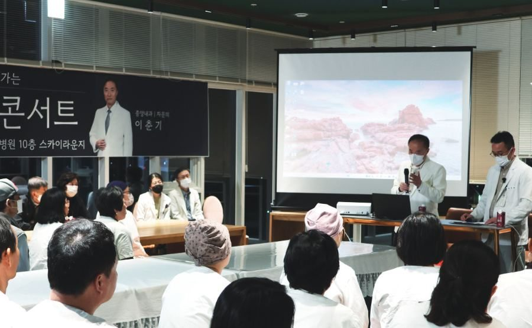
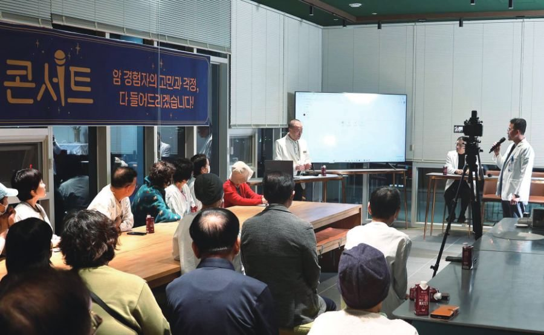
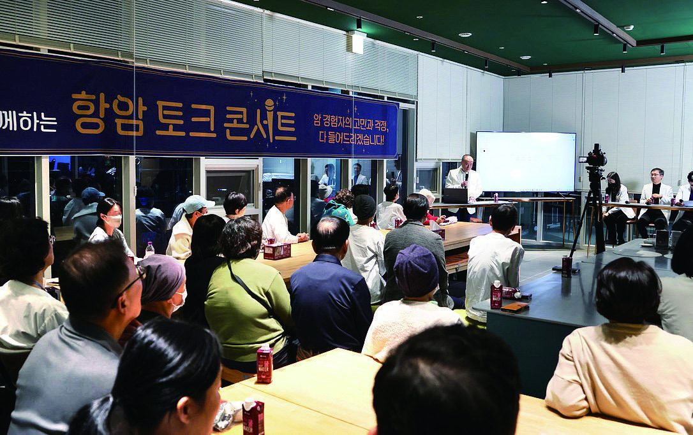

암정보 도서관
치료가 궁금할 때 찾아보시라고 한곳에 모았습니다. 항암 부작용은 언제 병원에 연락해야 하는지, 수술 후 언제부터 걸어도 되는지 ― 진료실을 나서면 다시 궁금해집니다. 하일렌요양병원은 그 질문에 답하는 영상과 글을 ‘암정보 도서관’에 모았습니다. 이 페이지에서 바로 보실 수 있습니다.

- 무엇이 있나
- 질문별 공식 블로그 글 · 강의·토크 콘서트·특강 영상 · 자문의 칼럼 · 최신 암정보
- 출처
- 하일렌 공식 블로그(hello_heilen) · 하일렌 유튜브(@hello_heilen)
- 문의
- 원내 상담실 · 카카오톡 채널 · 062-439-1000
[디렉터 확인] 암정보 도서관의 정본을 이 홈페이지 페이지로 둘지, 인포크 heilen01을 유지할지(R2 §6, 채널지도)
[디렉터 확인] 발행정본 B-13 균형 문장을 도서관 글에 적용할지(R3 §7)
질문별로 찾아보기
환자와 보호자가 실제로 묻는 질문을 기준으로 하일렌 공식 블로그 글을 모았습니다. 질문을 누르면 글 목록이 열립니다. 글 제목은 블로그에 올린 제목 그대로입니다.
[디렉터 확인] 아래 관련 글 11건의 실제 제목에 「광주」 단독 표기가 있습니다. 발행 제목 그대로 둘지, 링크 문구만 「전남광주」로 바꿀지 — 전 페이지에 같은 방식으로 적용
입원·단기입원·외래가 궁금할 때
여러 병원 진료 일정이 겹치면 어떻게 조정하나요
단기입원·외래 안내 페이지에서 치료병원 외래 일정을 이어가는 방법을 안내합니다.
첫 항암 받고 요양병원에 며칠 있어야 하나요
하일렌요양병원의 단기입원은 1박 2일부터 치료 일정에 맞춰 이용할 수 있습니다.
암요양병원 입원 기간은 보통 얼마나 되나요
항암 중에 요양병원에 꼭 가야 하나요
항암 후 집에서 쉬는 것과 요양병원 중 무엇이 낫나요
입원하지 않아도 외래로 통원하며 고주파온열암치료, 고압산소치료, 도수치료, 림프 관리, 고용량 비타민C, 면역 주사제, 영양공급수액을 받을 수 있습니다.
입원 첫날은 어떻게 되나요. 준비물은요
입원 서류는 소견서 또는 진료기록지 중 하나, 신분증, 피검사 결과지입니다. 자세한 내용은 입원 안내에 있습니다.
보호자 없이 입원할 수 있나요
보호자 면회는 1층 갤러리에서 하실 수 있으며, 밤늦은 시간과 새벽을 빼면 시간 제한이 없습니다.
배액관을 달고 있는데 입원할 수 있나요
항암 뒤 구토가 멈추지 않거나 밤에 아프면 누가 봐주나요
- 전남광주 항암 부작용 관리, 참지 말고 말해야 할까요?
- 견뎌야 할 것과 바로 연락해야 할 것 - 광주 하일렌요양병원 자문의가 정리한 항암 부작용
- 광주 암 요양병원 야간 응급 대응 기준 가이드
- 전남광주 암요양병원, 항암 후 응급실은 언제 가야 할까요?
증상은 병동에서 주치의에게 바로 전달되어 당일 처방으로 대응하며, 의료진이 24시간 상주하고 당직 체계로 확인·처방합니다.
비용이 궁금할 때
한 달에 비용이 얼마나 드나요
비급여 항목과 금액은 비급여·비용 페이지에 기준일을 밝힌 표로 게시합니다.
수술 후·항암 중 회복이 궁금할 때
갑상선 수술 후 흉터에 방수밴드 붙이고 샤워해도 되나요
수술 부위 관리는 수술한 병원의 지침을 그대로 이어받아 간호팀 및 주사·상처관리팀이 매일 확인합니다.
갑상선 수술 후 목소리는 언제 돌아오나요
갑상선암 수술 후 목소리 변화는 이비인후과 진료를 하는 김성훈 수석병원장이 확인합니다.
위암 수술 후 미음은 언제까지 먹나요
- 수술 후 미음 식사, 전남광주에서 어떻게 올려 가나요?
- 전남광주 암요양병원 위 절제 후 식사는 어떤 순서로 늘리나요?
- 위암 수술 후 덤핑증후군 식사 관리, 광주 요양병원 회복 기준 가이드
항암식부터 위절제식·저잔사식·저요오드식까지 환자 상태에 맞춘 치료식을 제공합니다.
항암 후 손발 저림은 언제까지 가나요
대장암 추적검사는 얼마나 자주 하나요
암 수술 후 걷기는 얼마나 해야 하나요
- 수술 후 첫 걷기, 전남광주에서 언제부터 얼마나 걸을까요?
- 전남광주 암요양병원 대장암 수술 전 2주, 걷기가 도움이 될까요?
- 전남광주 암재활운동, 항암 치료 중에도 할 수 있나요?
운동 범위는 주치의가 환자 상태를 보고 환자와 상담을 통해 결정합니다.
마음과 보호자가 궁금할 때
조직검사 결과를 기다리는 동안 너무 불안해요
명상 프로그램은 김성훈 수석병원장이 직접 진행합니다. 프로그램 페이지에서 안내합니다.
암환자 보호자인데 너무 힘들어요
강의·토크 콘서트·특강 영상
하일렌요양병원에서 열린 강의와 항암 토크 콘서트, 초청 특강을 연도별로 모았습니다. 영상은 하일렌 유튜브(@hello_heilen)에 있습니다.


[디렉터 확인] 2023년 개원 기념 특강·장익완 병원장 특강, 2025년 제1·2회 항암 토크 콘서트, 정민규 교수 특강의 날짜와 연자(R2 §5)
[디렉터 확인] 이춘기 자문의 영상·칼럼 게재 여부 — B-7-2 블로커 해소 전까지 제목 목록만 두는 원칙(R2 §5). 게재 시 「암 재발 방지…」「재발, 전이 두렵지 않아!」「15가지 질문 완전 정복」처럼 효과 단정으로 읽힐 수 있는 영상 원제를 그대로 둘지, 중립 제목으로 바꿀지도 함께 결정
| 연도 | 행사 | 연자 | 제목 | 영상 |
|---|---|---|---|---|
| 2023 | 개원 기념 특강 | 이춘기 자문의 | 「암! 어떻게 관리해야 하나요?」 | 영상 없음 |
| 2023 | 특강 | 장익완 병원장 | 「고주파온열암치료와 고용량비타민C」 | 영상 없음 |
| 2025 | 제1회 항암 토크 콘서트 | [디렉터 확인] 연자 | 「유방암·갑상선암·췌장암·폐암 Q&A 총정리」 | 영상 보기 |
| 2025 | 제2회 항암 토크 콘서트 | [디렉터 확인] 연자 | 「암 재발 방지·항암 부작용·면역항암제까지 Q&A 총정리」 | 영상 보기 [디렉터 확인] 영상 주소 — 유튜브 채널 목록과 인포크 heilen01은 이 주소, 링크트리에는 이 영상이 없음. 채널 목록을 근거로 인정할지 |
| 2025 | 초청 특강(원내) | 정민규 교수(세브란스 연세암병원 종양내과) | 「암의 특징, 항암 치료별 기전 및 특징」 | 영상 보기 |
| 2025 | 유튜브 강의 | 김성훈 수석병원장(이비인후과) | 「갑상선암 증상부터 치료, 관리까지!」 | 영상 보기 |
| 2025 | 유튜브 강의 유방암 교실 1부 | 이춘기 자문의 | 「유방암 발생 원인, 예방, 진단까지」 | 영상 보기 |
| 2025 | 유튜브 강의 유방암 교실 2부 | 이춘기 자문의 | 「재발, 전이 두렵지 않아! 최신 치료법」 | 영상 보기 |
| 2025 | 유튜브 강의 유방암 교실 3부 | 이춘기 자문의 | 「치료제 부작용 관리, 대처하는 법」 | 영상 보기 |
| 2025년 11월 10일 | 제3회 항암 토크 콘서트(10층 스카이라운지) | 이춘기 자문의 | 「15가지 질문 완전 정복, 갑상선·대장·췌장·유방·신장·위암까지」 | 영상 보기 |
| 2025 | 림프 레이저 테라피 셀프케어 특강 | [디렉터 확인] 연자 | [디렉터 확인] 게재 여부 — 기기명 표기 문제와 함께 판단(R2 §2-2) | 영상 없음 |
| 2026년 10월 23일(예정) | 초청 특강(10층 스카이라운지) | 이창영 교수(세브란스병원 흉부외과 과장) · 강상욱 교수(연세암병원 부원장) | 1부 「폐암 수술의 최신 경향」 · 2부 「갑상선암의 진단과 치료」 | 소식에서 안내 |
자문의 칼럼
하일렌 공식 블로그에서는 이춘기 자문의의 칼럼을 연재하고 있습니다. 최신 항암제 이야기부터 항암 부작용 관리, 재발·전이에 대한 판단 기준까지 환자분들이 궁금하지만 쉽게 물어보기 어려운 주제를 정리하고 있습니다. 이 페이지에는 제목과 링크만 둡니다.

최신 암정보
홈페이지 게시판에 올린 암정보 글입니다. 제목과 링크를 둡니다.
- 키트루다, 방사선 없이 3기 폐암 도전 2025-10-23
[디렉터 확인] 키트루다 글은 표기 규칙(B-12 순서·B-20 출처)에 맞춰 재발행 예정. 재발행 뒤 새 글 주소로 링크 교체
궁금한 점은 원내 상담실(062-439-1000) 또는 카카오톡 채널로 물어보세요.
제공 하일렌요양병원 · 검토 [디렉터 확인] 검토 의료진 · 검토일 [디렉터 확인] · 갱신 2026-10-05 · 관련 글 출처 하일렌 공식 블로그(hello_heilen), 제목은 발행대조 원장과 대조 · 영상 출처 하일렌 유튜브(@hello_heilen) · [디렉터 확인] 「작성·검토 의료진, 검토일, 원자료 링크」 표기 채택 여부(R3 §7)